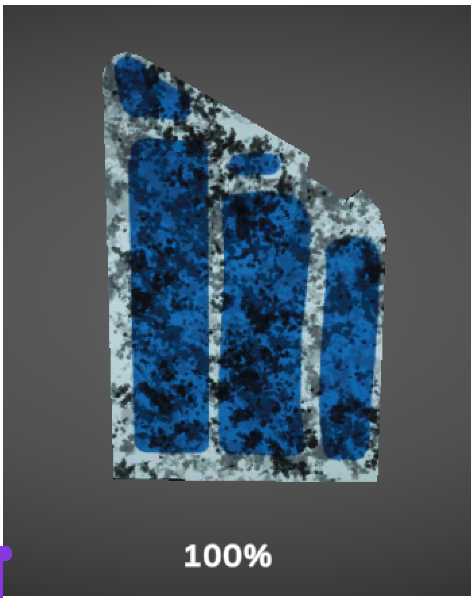
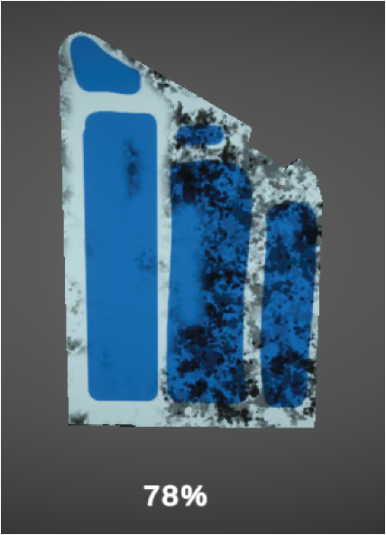
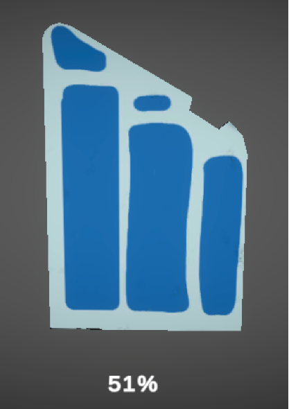

CS 184: Computer Graphics and Imaging, Spring 2023
Final Project MileStone
David Ge, Matthew Lu, Adam Tangonan, Jenny Mendez Mendez
PowerWash Simulator
Summary
SUMMARY
- We created an empty Unity project and imported CodeMonkey Rover Mechanic Simulator Project Files and CodeMonkey Utilities.
- Created a final project repository and shared it amongst all four members.
- Created an original Metal Texture with its corresponding Dirty Metal Texture and Metal Mask. (We used PhotoShop, as well as stock photos from the internet).
Progress
PROGRESS
- Setting up the project required an assortment of trial and error regarding the Unity libraries and add-ons involved. We tried watching different YouTube videos in order to solve issues with Unity. One of the major issues we stumbled upon was ensuring the shaders worked properly. The main shader for the material was staying Pink/Magenta, even though we edited the main shader for this prefab. The solution to this issue was adding Universal Render Pipeline Asset, Universal RP, 2D Sprite, CineMachine, Probuilder, and TextMeshPro. We also needed to run the Unity Project using Unity 2020.3.0 version.
- Outside of the issues we had regarding progress, the base format for the project reached the criteria we so desired for this milestone.
- Below is our updated schedule:
- Fix the animation bug to allow to flip to the other side
- Add Car 2D Model
- Add Reset Button
- Testing functionality and bugs
- Incorporate Staff’s Feedback
- Do the final project write up
- Create our presentation
- Film our Presentation & Present Final Project early May
Results
RESULTS
- Below are images for object at 100% dirt, 50% dirt, and 0% dirt.
|

100% Dirty;
|

78% Dirty;
|
|

51% Dirty;
|
Presentation
PRESENTATION
Resources
RESOURCES
(Clean Dust Example Video)